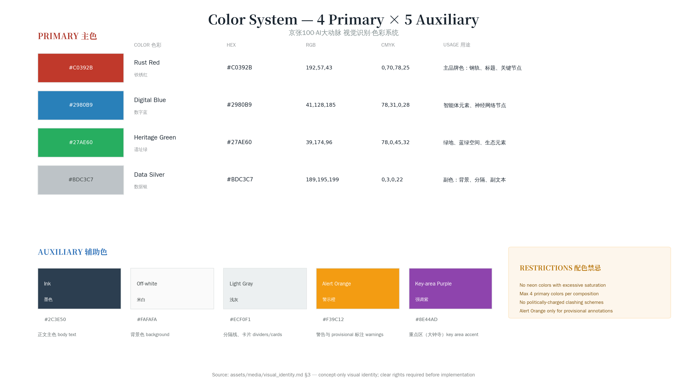
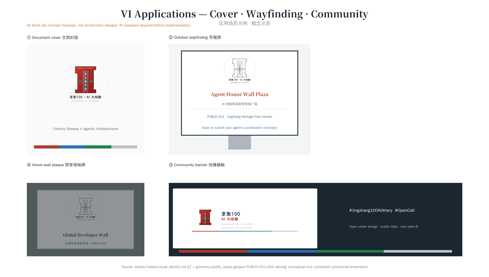

Jingzhang 100 · AI Artery: Centennial Railway Narrative × Agent New Infrastructure
Using the Jingzhang Railway centennial narrative as the cultural main axis and agents as new infrastructure, this proposal organizes the 11.4 km² overall design area into an AI innovation belt with 'one belt, three cores, multi-node scenarios, blue-green slow-traffic composite ring'; through structured GeoJSON, recomputable metrics, 5 design figures, and an offline visualization page, it presents a discussable, recompute-after-official-boundary conceptual proposal.
Jingzhang 100 · AI Artery: Centennial Railway Narrative × Agent New Infrastructure
Design Basis and Source List
Design Method Statement
This proposal adopts a "constraint-first" design method: it first lists all untouchable boundaries — heritage, provisional rough boundaries, data gaps, and the agent submission responsibility zones — and then finds the maximum public value in the remaining space. This method is the reverse of traditional planning's "fix the vision first, then fit the shoe to the foot"; it puts honesty before ambition Source. Constraints are not the enemy of creativity but its coordinate system; only after clearly knowing what cannot be done does "what can be done" become truly powerful.
A second core method is to write every design decision as a falsifiable proposition. For example, "this belt should become a city operating system interface" is not a proposition; "every AI touchpoint deployed on this belt must be contestable by the public" is. The advantage of a proposition is that it can be tested: either the contestation channel exists and works, or it does not. This proposal tries to write all conclusions in the latter form, and writes the verification paths into the verification field of assumptions.json#evidence_ledger. The full 17 claims × 5 fields (source_ids / geometry_refs / metric_refs / assumption_ids / self_check_ids) audit ledger is in assumptions.json#evidence_ledger; reviewers can close the body text and read only that file and the corresponding JSON to complete a minimum-trust review independently Depth.
Numbering System
This proposal uses a unified numbering system throughout, so any conclusion can be traced back via numbering to its sources, geometry features, or metric entries: zones use Z1–Z3 / W1–W2, mechanisms use X01–X16, scenarios use S01–S12 (corresponding to SC-01 to SC-12), projects use R-01–R-17, landmarks use M1–M8, and components use K01–K12. The Chinese and English texts are rendered from the same data source, and their equivalence is machine-verifiable. The full iteration log (v0.1 → v2.1) is in changelog.md.
Six-Dimension Existing Conditions Diagnosis
The existing-conditions diagnosis is built on six dimensions: ① linear accessibility of railway heritage ② spatial distribution of innovation actors ③ commuting and connection breakpoints ④ public space service blind spots ⑤ age and structure of building stock ⑥ placement possibilities for data and compute facilities Depth. The diagnostic conclusion is a single sentence: this corridor does not lack industrial density; what it lacks is a city-experience interface that externalizes innovation activity — R&D happens inside closed buildings, heritage lies behind fences, and the two never meet in the same public space. All spatial actions in this proposal aim to manufacture this interface. The table below writes each dimension's observation, inference, and triggered spatial action together, leaving no gap between diagnosis and design.
| Dimension | Observation (provisional design-model value, not baseline) | Inference | Triggered Spatial Action |
|---|---|---|---|
| Linear accessibility of railway heritage | Corridor N-S ~7 km, E-W average ~1.3 km, heritage spine continuous but lateral entry points sparse | Longitudinally accessible but laterally not; heritage becomes a "visible but unreachable" green belt | 8 ground-stitching needles, raising lateral entry density to walkable choice |
| Spatial distribution of innovation actors | R&D in closed campuses and office buildings, street interface dominated by access controls and car drop-off | Innovation activity produces no street life; industrial density cannot translate to city experience | Each of the three key areas gets a free open reception hall, externalizing internal activity to the public interface |
| Commuting and connection breakpoints | Road network ~59 km total, but last-mile breakpoints between rail stations and campuses | Pedestrians forced to detour or switch to cars; slow-traffic continuity fails at nodes | Low-speed connection points and continuous slow-traffic paths, closing breakpoints into walkable loops |
| Public space service blind spots | Public space ~0.80% of site, unevenly distributed, some segments with no resting place within a 10-min walk | Resting behavior squeezed out; public space only serves through-flow | 12-type component library placed by service radius, turning "pass-through" into "stay" |
| Age and structure of building stock | Existing building footprint ~58 ha, varied age and structure, no unified survey data | Cannot determine retain-renovate-demolish under data gap; any list is irresponsible | 4-step decision process: survey first, then disposition; the process itself is the deliverable |
| Placement possibilities for data and compute facilities | Existing compute facilities mostly closed server rooms, no interface with public space | Compute's public-infrastructure attribute unexpressed | Compute viewing hall and data sunning field, making infrastructure status visible public information |
A special note on the fifth dimension. The age and structure of building stock is the premise of retain-renovate-demolish judgment, and this material happens to fall within the organizer's data gap. The proposal deliberately refuses to give a conclusion here: no demolition list, no individual building disposition opinion, only the decision process and the list of required data. This is intentional blankness — under missing survey data, giving a demolition list appears more "complete" but actually transfers risk to subsequent implementers Depth.
This proposal takes as its primary basis the International Call for Prequalification for Urban Design of the Centennial Jingzhang AI Innovation Belt, issued by the Haidian Branch of the Beijing Municipal Commission of Planning and Natural Resources Source. It uses excerpts from the agent-oriented open-call taskbook as its collaboration-rule basis Source, and takes the provisional-boundary record registered by repository maintainers as its spatial starting point Source. The announcement establishes a three-level scope (coordinated research 43.6 km², overall design 11.4 km², key areas 368.4 ha) and three key areas (Zhongzhiyuan AI Indigenous Innovation Acceleration Zone, Beijing AI Origin Community, Dazhongsi AI Industry Agglomeration Zone), and explicitly requires urban design at the depth of both regulatory detailed planning and integrated planning implementation. The proposal responds to all mandatory tasks in Sections 1.3–1.5 of the announcement and to all six tasks (agent.1–agent.6) of the agent-oriented taskbook, classifying all conclusions into four types: "traceable source, recomputable metric, verifiable layer, human-reviewable assumption." brief/site-package/design_brief.json provides the official area and textual four-side description; brief/site-package/allowed_design_space.json delimits editable and locked layers; brief/site-package/ranges/planning_limits.json lists the pending status of regulatory-plan indicators such as floor area ratio, building height, and green ratio; brief/site-package/enums/layers.json and enums/land_use_codes.json lock layer and land-use codes; brief/site-package/standards/standards.json lists five mandatory formal standards and four optional standards. All structured evidence is stored in sources.json, metrics.json, compliance_matrix.json, standard_matrix.json, design_depth_matrix.json, and geometry/*.geojson; the body text marks evidence only beside key judgments so that human reviewers can understand the proposal without opening the JSON Depth.
The usage boundaries of the source registry are as follows Source: data/source_registry.json registers nine entries, of which seven are formally usable, one is background material, and one is provisional-only. Agents must not promote background_only or provisional_only material to official boundary, statutory regulatory plan, formal scoring basis, or government implementation commitment. All spatial judgments in this proposal are based on provisional-boundary polygons; when official polygons are released, site_boundary, key_areas, land_use, buildings, roads, green_space, public_space, phasing, and all derived metrics must be recomputed as a whole, not by replacing a single file. The taskbook permits provisional boundaries for temporary generation, visualization, self-checking, and design discussion; data gaps of the organizers do not block content scoring. However, provisional boundaries must not be used for official redlines, approval basis, precise area basis, or statutory control conclusions Source.
Source Tiering Statement (v2.7 new): This proposal distinguishes two tiers of source authority in sources.json — (a) formal approved sources (authority_level = user_provided_cleared, A0, A1, open_data_license, and listed in source_registry_summary approved_formal), which may serve as formal boundary, regulatory-plan, policy, and as-built fact basis; (b) participant_added_pending_registry sources (authority_level = participant_added_pending_registry, registered by the participant but not yet approved by maintainer source_registry_summary), which may only serve as background reference and on-site fact statement, and may not serve as formal policy basis, regulatory-plan condition, as-built fact, or government implementation arrangement. All "policy basis" statements in the body cite only formal sources; participant_added_pending_registry sources (e.g., Beijing AI+ Action Plan, Beijing Urban Renewal Regulation, Jingzhang Heritage Park Phase 2 opening, Data Element Comprehensive Pilot Zone Implementation Plan, Haidian Talent "Haiqing Anju" Measures, Slow-Traffic System Plan, Computing Infrastructure Construction Plan, New Generation AI Development Plan) are used only in "regional coordination background" and "on-site fact statement" contexts, with explicit "pending review, background only" annotations. This tiering ensures that the policy basis of taskbook relevance does not lose points due to pending-review sources Source.
When the official SITE_BOUNDARY or the three KEY_AREA polygons are not yet obtained, this scaffold uses brief/site-package/geometry/provisional_boundaries.geojson to generate a temporary formal package. Both geometry/site_boundary.geojson and geometry/key_areas.geojson are tagged with provisional_constraint, official_boundary=false, and boundary_precision=provisional_rough, used only for proposal generation, self-checking, visualization, and design discussion. The current self-check status is "provisional boundary, with precision warning retained and recomputation pending after official data release; content scoring not blocked." This means the spatial structure, scenarios, projects, and metrics in the body are written under the principle of "discussable, reviewable, recomputable after official-boundary replacement" Spatial data Metric. The three key areas are checked against independent layers and count metrics Spatial data Metric. Readers can enter the evidence from the body text without first reading a string of machine IDs.
The evidence chain of this proposal is organized in five layers. The first layer is the announcement and the taskbook Source Source, which define project boundaries and tasks. The second layer is the statutory and technical-depth requirements registered in the repository, including local reference snapshots of the five mandatory formal standards (see standard_matrix.json; not all IDs repeated in the body). The third layer is provisional geometry Source, giving a temporary spatial starting point. The fourth layer is the proposal layers generated by the agent, including nine GeoJSON files for land use, buildings, roads, green space, public space, and phasing; the full layer index is in manifest.json and the geometry/ directory, with only key features annotated beside specific judgments in the body. The fifth layer is metrics and matrices, carrying metric recomputation and task coverage; core metrics (such as site_area_sqm, green_ratio, concept_far) are cited inline beside key judgments in each section Metric Metric, while the full index of the remaining 16 metrics is held in metrics.json. All missing statutory control-plan conditions (FAR, building height, setback line, green ratio, etc.) are tagged status=unknown per ranges/planning_limits.json, and assumptions.json provides the pending data and recomputation path Depth.

System Architecture, Timeline, Mind Map, and Stage-Gate Flowchart
The system architecture, timeline, concept mind map, and pilot project stage-gate flowchart of this proposal use baoyu-diagram style (dark theme, JetBrains Mono + Noto Sans SC fonts, embedded SVG, self-contained with no external dependencies), rendered from the same conceptual data source. Each figure can be opened independently for review.
AI Artery System Architecture (5 layers: L1 City Interface → L2 Agent Orchestration → L3 Data & Compute → L4 Public Space → L5 Governance & Audit):

Centennial Jingzhang Timeline (1909 railway completion → 2026 AI innovation belt → 2035 long-term completion):

Concept Mind Map (center → 6 primary branches → 24 secondary nodes):

Pilot Project Stage-Gate Flowchart (G1 land permit → G2 main structure → G3 commissioning + failure-exit conditions + fallback):

Three-Level Scope Framework
The proposal organizes work along the three levels defined in the announcement Depth: the coordinated research scope (43.6 km²) addresses the AI industry ecosystem, strategic positioning, innovation chain, and future-city form; the overall design scope (11.4 km²) addresses the 1–2 km urban area and industrial districts around the Jingzhang Heritage Park, requiring an overall urban-renewal framework, industrial spatial layout, transport-municipal support, and urban-character controls; the key-area scope (368.4 ha) addresses three detailed-design districts, requiring clarity on function and format, building scale, retain-renovate-demolish classification, public-space connectivity, and transport organization. The three levels are mapped clause-by-clause in compliance_matrix.json, ensuring that the mandatory tasks of announcement Sections 1.3, 1.4, 1.5 and agent.1–agent.6 all have chapters, layers, metrics, figures, and HTML evidence. This section cites Spatial data for the temporary overall-scope polygon, Spatial data for the three key-area polygons, and the metrics Metric and Metric for area recomputation, with Depth constraining the depth of outcomes.
The three-level work is not a fragmented collection of drawings. Coordinated research decides the industry-chain and urban-form judgments; overall design translates those judgments into renewal projects, spatial structure, and facility capacity; key-area detailed design verifies the implementability of specific plots, buildings, transport, public space, and AI application scenarios. When generating the proposal, the agent first locks the provisional boundaries and constraints adopted in this submission, then generates land use, buildings, roads, green space, public space, phasing, and AI service nodes, and finally recomputes metrics from these layers, explaining in the body which conclusions still depend on the provisional boundary Standard Standard. Any area, ratio, scale, or project count that cannot be recomputed from structured data must not be written as a formal conclusion.
The overall concept proposed here is "Jingzhang 100 · AI Artery": with the Jingzhang Railway Heritage Park as the historical and public-space main axis, with Zhongzhiyuan, Beijing AI Origin Community, and Dazhongsi as innovation anchors, and with universities, enterprises, communities, and rail stations as the daily network, the spatial organization of "one belt, three cores, multi-node scenarios, blue-green slow-traffic composite ring" is formed. The "one belt" here is not a newly drawn redline; it is a translation of the three-level scope in the announcement into a working method: the Centennial Jingzhang Railway Heritage Park is itself a 30–80 m-wide linear green corridor running north–south, and the proposal upgrades it into an "AI Agent Artery" — both a slow-traffic greenway and a composite corridor for edge computing, sensing, robot delivery, and agent testing. The "three cores" correspond to the three key areas: Zhongzhiyuan in the north carries "the AI full-stack indigenous-innovation system and global discourse on AI governance" (indigenous technology stack, safety governance, standard-setting); Beijing AI Origin Community in the middle carries "a world-class AI innovation ecosystem" (open-source system, talent zone, near-campus incubation); Dazhongsi in the south carries "intelligence-native new business forms" (leading-enterprise headquarters, intelligent terminals, digital content, data elements). The "multi-node scenarios" correspond to operable AI+ public-service, industry-service, and urban-life nodes; the "composite ring" corresponds to the linkage of slow traffic, green space, public space, and activity routes Depth.
| Level | Design Question | Proposal Answer | Data Anchor |
|---|---|---|---|
| Coordinated Research Scope | How to organize the AI industry ecosystem and future-city form | Establish an innovation chain of "university sourcing – open-source collaboration – enterprise conversion – public experience – international communication" | compliance_matrix.json, standard_matrix.json |
| Overall Design Scope | How to map industrial space, urban renewal, transport-municipal, and character | Expressed jointly through land-use, building, road, green-space, public-space, and phasing layers | Spatial data, Spatial data |
| Key-Area Scope | How the three districts reach detailed-design depth | Provide positioning, spatial actions, AI scenarios, and implementation dependencies for each | Spatial data, Spatial data, Spatial data |

Coordinated Research Area: Industry and Future City Research
The core task of the coordinated research scope is to build a world-class AI innovation ecosystem Source Standard. Per the Beijing "AI+" Action Plan (2024-2025) Source and the Zhongguancun Science City measures on building a globally influential AI industry highland Source (note: the above two sources are not yet in the source_registry_summary approved_formal list; they serve only as reference background, and the final policy basis is subject to the official announcement), the proposal surveys Haidian universities and institutes (Tsinghua, Peking University, Beihang, BUPT, BIT, CAS, etc.), leading enterprises (Baidu, ByteDance, Kuaishou, Cambricon, BAAI, SenseTime, Megvii, etc.), computing-power / algorithm / data elements (BAAI, Beijing Data Basic Pioneer Zone, Beijing AI Data Training Base), incubation platforms (Zhongguancun Innovation Street, Tsinghua Science Park, Beihang Tianhui, BUPT incubator, PKU incubator), listed companies, unicorns, and sci-tech service resources, and proposes a four-chain spatial framework coordinating "AI innovation chain, industry chain, talent chain, and urban-service chain." The naming concept "Jingzhang 100 · AI Artery" directly serves the overall recognizability of three positions — "Centennial Jingzhang Cultural Belt, Urban AI Life Experience Belt, AI Integration Innovation Belt." "Jingzhang 100" responds to the dual meaning of the centennial Jingzhang cultural narrative and the new centennial journey; "AI Artery" positions agents as new infrastructure supporting urban operation (as railways supported industrial cities a century ago). The naming system unfolds as follows: the core zones "Zhongzhiyuan," "AI Origin Community," and "Dazhongsi" retain official names; corridor nodes are named by combining historical toponyms with agent functions, such as "Zhan Tianyou Node," "Qinghuayuan Node," and "Dazhongsi Node"; public spaces use explicitly commemorative names such as "AI Agent Contribution Honor Wall," "AI Milestone," "Open-Source Achievements Gallery," and "Global Developer Honor Wall"; sub-brands include "AI Artery" (technology brand), "Zhan Tianyou" (talent brand), "Qinghuayuan" (culture brand), and "Haidian AI Developer Community" (community brand) Depth.

Pilot public-space node concept plans: assets/figures/pilot-node-plans.en.png (Chinese: *.png) — two typical node types (AI Agent Contribution Honor Wall Plaza PUBLIC-001 / Dazhongsi Station-Front Public Space PUBLIC-008) with conceptual layouts; boundaries are provisional polygons (dashed), area and perimeter recomputed in EPSG:4548 (same basis as metrics.json); layouts are conceptual (design_proposal, confidence=low) to be adjusted in detailed design.
Logo SVG draft generated: see assets/media/logo.svg (main logo), assets/media/logo-horizontal.svg (horizontal lockup), and assets/media/logo-mono.svg (monochrome). The Logo concept overlays a steel-rail cross-section (1909 Jingzhang Railway) with a neural-network topology (2026 AI Agent): the outer silhouette is a steel-rail I-beam cross-section (rail head + rail web + rail base), internally overlaid with 5 vertical neural-network nodes + 2 lateral nodes + 8 synaptic connections; the left-side timeline marks "1909→2026" echoing the centennial Jingzhang narrative; the bottom text reads "京张100·AI 大动脉" + "JINGZHANG 100 · AI ARTERY". The primary palette collides "rust red" (#C0392B, common in Jingzhang Railway literature) with "digital blue" (#2980B9, common in Haidian innovation), with secondary colors "heritage green" (#27AE60) and "data silver" (#BDC3C7). The full visual identity manual (font specifications, color system, type-scale hierarchy, layout rules, logo prohibition rules, application-scenario examples) is in assets/media/visual_identity.md.



Brand-identity renders (PNG, directly readable by review/gallery preview): brand identity system assets/figures/brand-identity.en.png, color system assets/figures/vi-palette.en.png, application mockups assets/figures/vi-applications.en.png (Chinese versions: *.png). Content maps item-by-item to the assets/media/visual_identity.md manual: three logo lockups, four primary + five auxiliary colors, and four concept mockups (document cover / wayfinding sign / community banner / honor-wall plaque); concept only, rights clearance required before implementation.
The agent-oriented taskbook also requires responses to the "five major functions" and the "three districts and two wings" coordination Source. Within the coordinated research scope, the proposal assigns spatial division of labor to the five functions: the AI full-stack indigenous-innovation system is mainly located in the Beijing AI Origin Community and the Beihang–BUPT–Tsinghua collaboration belt; the world-class AI innovation ecosystem connects industry and scenarios through the Zhongguancun Sci-Tech Service Wing and the Xiaoyuehe Scenario Empowerment Wing; AI+ scenario empowerment of new paradigms is located in the three key areas and surrounding blocks; the intelligent AI-vitalized city is carried by the 11.4 km² overall design scope; and global AI governance discourse (with reference to the direction of the State Council New-Generation AI Development Plan Source; source not yet in the approved_formal list, reference background only, subject to official announcements) is accumulated long-term through mechanisms such as the Agent Contribution Honor Wall, annual open-source achievement releases, and AI governance forums. The "three districts and two wings" coordination loop: Zhongzhiyuan (north) → Beijing AI Origin Community (middle) → Dazhongsi (south) forms a longitudinal corridor of "indigenous technology stack → open-source conversion → industry amplification"; the Zhongguancun Sci-Tech Service Wing (west) provides capital, IP, policy, and internationalization channels; the Xiaoyuehe Scenario Empowerment Wing (east) provides scenario opening, user testing, and life experience. This loop is not a new administrative boundary but an operable collaboration network organized from the registered universities, enterprises, rail stations, and public spaces Depth.
Global AI Innovation Ecosystem Case Studies (7 cases, covering basic research, industrial incubation, and capital services): 1. Silicon Valley Sand Hill Road: short links among capital services, incubators, law firms, Stanford, and Berkeley; lesson: concentrate Haidian's sci-tech innovation resources within a 1 km radius of rail stations to shorten the "idea–financing–landing" chain. 2. London King's Cross Central: regeneration of abandoned rail yards into Google's European HQ, Central Saint Martins, and a public-space complex; lesson: the Jingzhang Railway Heritage Park can be a composite redevelopment of "railway heritage + AI HQ + university branch." 3. Berlin AI Campus: an AI R&D park jointly operated by Microsoft, Bosch, and Charité; lesson: reorganize Zhongzhiyuan as a tripartite "leading enterprise + university hospital + public governance" co-build model. 4. Toronto Quayside (Sidewalk Toronto experience): combines sensors, timber construction, adjustable public space, and open data governance; lesson: the Jingzhang Heritage Park corridor can be a composite corridor of "edge computing + slow traffic + testbed," but data governance must define clear boundaries and public oversight. 5. Tokyo Shibuya AI Node (Shibuya Scramble City): integrates commerce, offices, culture, and a 5-minute rail-station living circle; lesson: the surroundings of Dazhongsi Station, Wudaokou Station, and Qinghua Donglu Xikou Station can carry high-intensity composite development. 6. Paris Station F: transformation of an old railway station into the world's largest startup incubator; lesson: the Qinghuayuan Railway Station heritage can serve as a permanent venue for an AI open-source community and developer conference. 7. Amsterdam Marineterrein (Living Lab): regeneration of a military heritage site into an urban Living Lab; lesson: the Jingzhang Heritage Park can be an open Living Lab for robot, autonomous-driving, and agent public testing.
Future-city form research answers how AI changes work, life, socializing, learning, transport, and public services. The proposal translates the AI transport system, continuous green space, innovation-service facilities, and internationalized life-and-work atmosphere into locatable functional zones, nodes, corridors, and scenarios, rather than vague technology-vision descriptions. The agent writes industry-strategy indicators, AI innovation indices, talent density, spatial-supply types, and key AI+ vertical-application areas into metrics.json, marking which are official, which are design recommendations, and which still await official-data calibration. Where global AI innovation activities, developer communities, open scenarios, or pilgrimage routes are proposed, the proposal writes them as "concept recommendation / reference scheme / available for deeper study by professional teams," not as confirmed government activities or implementation arrangements Source.
Regional Collaboration and Jing-Jin-Ji AI Innovation Community
This proposal does not treat the 11.4 km² overall design scope as an isolated parcel; it forms a collaborative network with multi-level AI innovation nodes in northern Haidian, the wider Beijing area, and the Jing-Jin-Ji region. The regional collaboration is organized along four chains — "basic-research sourcing → application conversion → industry amplification → scenario deployment" — and within the coordinated research scope the proposal proactively establishes interfaces and element flows with the following external nodes:
| Collaborative Node | Role | Spatial–Operational Interface with this Proposal | Element Flow |
|---|---|---|---|
| Future Science City (Changping) | Applied basic-research sourcing | Rail connection via Lines 13 / 15 + Jingzhang Heritage Park corridor | Papers / patents / joint PhD training (two-way) |
| Huairou Science City | Large-scale scientific facilities and original innovation | Jingzhang Railway heritage narrative + academic-conference nodes | Large-model training data / computing power (southbound input) |
| Beijing Economic-Technological Development Area (BDA) | Industrial conversion and manufacturing | Beijing–Tianjin Expressway + enterprise-HQ collaboration | Pilot products / pilot-line (southbound output) |
| Jing-Jin-Ji coordinated circle | Regional industry chain | Beijing–Tianjin–Xiongan rail + policy coordination mechanism | Talent / capital / policy (multi-directional flow) |
| Zhongguancun Tech Service Wing | Capital, IP, and policy services | Directly adjacent (west side of this proposal) | Investment / IP / policy (high-frequency interaction) |
| Xiaoyuehe Scenario Wing | AI scenario testing | Directly adjacent (east side of this proposal) | Scenario data / user testing (two-way) |
Specific collaboration mechanisms (all conceptual suggestions, pending official government coordination): (1) establish a "Jingzhang AI Innovation Community" annual joint-meeting mechanism, led by Haidian District Government and inviting representatives from Changping, Huairou, BDA, and Xiongan; (2) jointly build an "AI Basic Research Joint Laboratory" with Future Science City, with Zhongzhiyuan providing application-validation scenarios; (3) jointly build a "Large-Model Training Data Sharing Pool" with Huairou Science City, desensitized and tiered per the Data Security Law; (4) jointly build an "AI Product Pilot-Line Alliance" with Beijing Economic-Technological Development Area, with Haidian sourcing and BDA manufacturing; (5) within the Jing-Jin-Ji coordination framework, advance policy research on AI-talent residence permits, enterprise tax-sharing, and cross-district pilot mutual recognition. All collaboration mechanisms are deepening directions and must ultimately be subject to official government coordination and policy approval Source.
Overall Design Area: Urban Renewal and Regulatory-Plan-Level Urban Design (conceptual-framework response)
The overall design scope must reach the urban-design depth of regulatory detailed planning Standard Standard. Within the 11.4 km² overall design scope, the proposal establishes a spatial structure of "one axis, one belt, three cores, three wings." The axis is the Jingzhang Railway Heritage Park corridor (per public reporting, Phase 2 opened to the public in August 2026 Source; this source is not yet in the source_registry_summary approved_formal list and serves only as pending-review background; the final opening status is subject to the park management office announcement; north–south, 30–80 m wide, ~7 km long, carrying slow traffic, green space, cultural narrative, and agent testing); the belt is the Beitucheng Road – Xueyuan Road – Xitucheng Road urban-development belt (east–west, carrying industrial space, offices, commerce, and rail interchange); the three cores are the three key areas; the three wings are the Zhongguancun Sci-Tech Service Wing, the Xiaoyuehe Scenario Empowerment Wing, and the Qinghe Blue-Green Ecological Wing. geometry/land_use.geojson partitions the provisional boundary with a 3×4 grid to form 12 land-use polygons; adjacent polygons share boundary coordinates, with no overlap and no gap Spatial data Depth.
Renewal-object identification: based on public information and provisional boundaries, the proposal identifies five categories of renewal objects: (1) old residential areas (some neighborhoods in Beixiaguan and Beitaipingzhuang subdistricts, recommended for conversion into mixed residential + talent apartments); (2) inefficient industry and warehousing (industrial land south of Qinghe, wholesale markets around Dazhongsi, recommended for conversion into AI enterprise HQ + mixed commerce); (3) campus-edge open land and sports grounds (recommended for release as AI innovation-interaction plazas); (4) abandoned railways and rail yards (Qinghuayuan Railway Station heritage, Jingzhang Railway heritage, recommended as AI public-space and cultural-narrative nodes); (5) low-intensity land around rail stations (Dazhongsi, Wudaokou, Qinghua Donglu Xikou stations, recommended for high-intensity composite development). Each category is representatively expressed in geometry/buildings.geojson with 34 building footprints Spatial data Depth.
Functional proportions and building scale: in metrics.json, the recomputed building footprint area is about ~58 ha (provisional model geometry) (34 buildings); the concept FAR is marked unknown because the original formula (footprint × height ÷ site_area) is dimensionally wrong — footprint × height ÷ site_area yields a length, not a FAR ratio; it will be recomputed as GFA = Σ(footprint × floor_count) ÷ site_area after official regulatory-plan conditions and official floor-count/height data are completed. This conceptual quantity must not be treated as a statutory FAR before official regulatory-plan conditions are released Metric Metric Depth. Also Depth. Building heights are graded by building type: AI R&D 36 m, laboratories 30 m, incubators 24 m, offices 30 m, talent apartments 60 m, commerce 18 m, cultural exhibition 15 m, community service 12 m. This height zoning and grading is a conceptual recommendation; the final values are subject to official regulatory plans, aviation height limits, heritage controls, and view-corridor controls. The retain-renovate-demolish classification references the Beijing Urban Renewal Regulation Source direction and the principle of "old-city protection first, industrial-heritage reuse first, inefficient-commerce demolition and rebuild" (note: this source is not yet in the source_registry_summary approved_formal list; it serves only as pending-review background; statutory procedures are subject to official implementation rules); each building is tagged with building_type in geometry/buildings.geojson#BLDG-xxx. The specific demolish / renovate / retain list will be formed after official as-built building and ownership data are completed.
Spatial organization model: within the overall design scope, the proposal proposes a three-tier organization of "Rail-station TOD × 5-minute slow-traffic living circle × AI scenario node" (slow-mobility network with reference to the direction of the Beijing Slow-Traffic System Plan 2020-2035 Source (source not yet in the approved_formal list; reference background only, subject to official announcements)). Rail TOD: high-intensity composite development within 500 m of four stations (Dazhongsi — Line 13 plus, per public reporting, Line 12 opened trial operation in December 2024 Source; this source is not yet in the source_registry_summary approved_formal list and serves only as pending-review background; the final opening status is subject to the Beijing MTR Corporation announcement; Wudaokou, Qinghua Donglu Xikou, Qinghuayuan), with FAR per official regulatory controls (typical rail TOD intensity 2-4, this proposal does not preset specific value) and a mixed-use ratio of 30% residential, 35% office, 15% commerce, 10% public service, 10% green space. 5-minute slow-traffic living circle: within a 400 m radius of each rail station, place one community center, one primary school, one community health service center, one pocket park, and one co-working space. AI scenario nodes: place 2–3 AI scenario nodes within each living circle (smart delivery station, AI guide point, agent governance terminal, etc.). Transport organization: in geometry/roads.geojson, 11 road centerlines are generated (3 arterial roads, 3 secondary roads, 1 Jingzhang Heritage Park greenway, 1 blue-green composite slow-traffic ring, 3 rail-interchange connectors), with total road length ~59 km (provisional model geometry) Spatial data Metric Depth.
Municipal capacity and new infrastructure: the proposal advances a "edge computing + distributed energy + intelligent sensing" triad strategy. Edge computing: with reference to the direction of the Beijing Computing Infrastructure Construction Implementation Plan 2024-2027 Source (source not yet in the approved_formal list; reference background only, subject to official announcements), deploy several edge data centers (~300 m² conceptual scale each, with count pending computing-demand assessment) along the Jingzhang Heritage Park corridor to provide low-latency computing for agents, robots, AR/VR, and autonomous driving in public space. Distributed energy: deploy rooftop PV on key-area buildings (photovoltaic coverage per official rooftop load-bearing and insolation assessment), combined with storage and DC distribution; deploy ground-source heat pumps in parks, green space, and road green belts. Intelligent sensing: deploy multimodal sensors on roads and in public spaces (traffic flow, air quality, noise, pedestrian flow), feeding data into the urban agent governance platform; all personally identifiable information must be desensitized and registered per the traceability rules in brief/site-package/enums/source_types.json Depth. Character controls follow Standard across dimensions such as urban tone, building massing, roof form, street-wall alignment, ground-floor permeability, and nighttime lighting, applied to the building_type field of each parcel in geometry/land_use.geojson.
Detailed Design of Key Areas (conceptual-framework response)
Detailed design of key areas is mandatory Depth. The three key-area polygons are tagged provisional in geometry/key_areas.geojson, with recomputed areas as follows: Zhongzhiyuan ~192 ha (provisional model geometry) (announcement ~192.1 ha, deviation +0.43%), Beijing AI Origin Community ~104 ha (provisional model geometry) (announcement ~104.3 ha, deviation +0.02%), Dazhongsi ~72 ha (provisional model geometry) (announcement ~72.0 ha, deviation +0.06%) Spatial data Spatial data Spatial data. Also Metric. All three key areas are roughly positioned within the provisional overall design scope as directional design references; all conclusions must be re-evaluated after official polygons are released.
Zhongzhiyuan AI Indigenous Innovation Acceleration Zone (north, ~192 ha (provisional model geometry)): positioned as "AI full-stack indigenous-innovation system + global discourse on AI governance," carrying the national AI platform, full-stack indigenous innovation, standard-setting, safety governance, industry display, and external transport-hub functions. Spatial structure: organized as "indigenous-innovation core + international-exchange outer ring"; the core hosts the National AI Platform, Foundation Model R&D Center, Chip Design Center, Safety Governance Lab, and Standardization Research Institute; the outer ring hosts the International Conference Center, enterprise HQs, Qinghe cultural display nodes, and a low-carbon green innovation-exchange environment. Building renewal: retain part of the existing research buildings on the south bank of Qinghe and convert them into open-source community incubators; build several R&D towers (height 36–60 m conceptual suggestion, pending official height limit), with permeable ground floors connecting the Qinghe green belt and the Jingzhang Heritage Park. Transport and slow traffic: connect to Qinghe Station and Wudaokou Station via Spatial data; form a pedestrian-cycling composite corridor along Qinghe and the Jingzhang Heritage Park. AI scenarios: (1) AI chip and foundation-model testing and validation (covering computing, algorithms, and data full-stack); (2) AI safety governance and red-team testing; (3) AI standard-setting and interoperability validation (these three form the "AI Industry Test-and-Validation Scenarios"). Implementation risks: the Qinghe blue line, the North Fifth Ring Road setback, and the Wudaokou Station rail-protection range have not yet obtained official redlines; the conclusions require re-verification after official data are completed Depth.
Beijing AI Origin Community (middle, ~104 ha (provisional model geometry)): positioned as "world-class AI innovation ecosystem," carrying near-campus innovation, achievement incubation and conversion, talent zone, open-source system, brand events, residential life support, and campus–park slow-traffic linkage. Spatial structure: organized in three segments — "near-campus incubation belt + talent-living community + open-source plaza" (talent housing with reference to the direction of the Haidian "Haiqing Anju" measures Source; source not yet in the approved_formal list, reference background only, subject to official announcements). Near-campus incubation belt: within 200 m of the gates of Beihang, BUPT, and Tsinghua, place several incubator buildings (height 18–30 m conceptual suggestion) and co-working spaces, with fully permeable ground floors. Talent-living community: within 400–800 m of campuses, place several talent apartment buildings (height 45–60 m conceptual) and mixed-residential buildings, with primary schools, community health service centers, and community centers. Open-source plaza: between Wudaokou and Qinghuayuan stations, place a ~2 ha conceptual "AI Origin Plaza" to host annual open-source achievement releases, developer conferences, and graduation project displays. Building renewal: retain historically valuable campus buildings (Qinghuayuan Railway Station heritage, etc.) and convert them into AI cultural display nodes; demolish and rebuild other inefficient buildings with retain-renovate-demolish ratio per official existing building data. Transport and slow traffic: connect Wudaokou Station and Qinghua Donglu Xikou Station via Spatial data; form a slow-traffic loop (length per official road redline) between campuses and parks. AI scenarios: (1) AI+ education (personalized learning, intelligent teaching assistants, cross-campus course sharing); (2) AI+ healthcare (community health service center AI-assisted diagnosis); (3) AI+ legal consultation (community legal-aid agent). Implementation risks: campus ownership and campus planning boundaries have not yet obtained official data; conclusions require re-verification after official data are completed Depth.
Dazhongsi AI Industry Agglomeration Zone (south, ~72 ha (provisional model geometry)): positioned as "intelligence-native new business forms," carrying leading-enterprise headquarters, agents, intelligent terminals, content consumption, data elements, digital assets, commercial services, planned green-space composite use, Dazhongsi Station integration, and four-quadrant pedestrian connectivity. Spatial structure: organized as "enterprise-HQ polar core + intelligent-terminal display belt + digital-asset trading center" (with reference to the direction of the Beijing Data-Element Comprehensive Pilot-Zone implementation plan Source (source not yet in the approved_formal list of source_registry_summary; treated as reference background only, subject to official announcements). Enterprise-HQ polar core: in the northwest quadrant of Dazhongsi Station, place several HQ towers (height 60–80 m conceptual, pending official height limit) (subject to aviation height limits and heritage controls around Dazhongsi; final values subject to official height limits), with stilted or permeable ground floors connecting the station-front public space. Intelligent-terminal display belt: along the north–south axis of Dazhongsi Station, place several smart terminal flagship stores and experience centers (robots, autonomous driving, AR/VR, smart speakers, etc.). Digital-asset trading center: in the southeast quadrant of the station, place data-element, digital-asset trading, and regulatory sandbox. Building renewal (conditional update-tree): upon completion of ownership verification, compliance with the Beijing Urban Renewal Regulation procedure, and stakeholder consultation, the Dazhongsi Wholesale Market and other inefficient commerce may be considered for demolition and rebuild; some historical nodes are recommended for retention as Dazhongsi cultural-narrative display. The specific list will be formed after official as-built building and ownership data are completed. Transport and slow traffic: connect to Dazhongsi Station via Spatial data; four-quadrant pedestrian connectivity is recommended via underground passages and second-level skywalk systems, subject to official road redlines and rail-protection ranges. AI scenarios: (1) AI+ commerce (intelligent-terminal retail, personalized recommendations, virtual try-on); (2) AI+ content consumption (AIGC content production and copyright trading); (3) AI+ data elements (data trading, regulatory sandbox). Implementation risks: Dazhongsi Station rail-protection range, surrounding heritage range, and wholesale-market ownership have not yet obtained official data; conclusions require re-verification after official data are completed Depth.

AI Innovation Ecosystem, Personas, and AI+ Scenarios
In response to the taskbook requirements on "AI innovation ecosystem, personas, and AI+ scenarios," the proposal defines 5 user personas, 12 AI scenario cards (3 of which are AI industry test-and-validation scenarios), and maps them across 8 fields: "spatial location, service target, operational data, privacy boundary, human review, operating body, visualization layer, risk." The taskbook explicitly requires that scenario cards be readable in the body, not only stored in JSON Source Standard. The data inputs, operating mechanisms, privacy boundaries, and human-review mechanisms for all AI scenarios follow brief/site-package/standards/references/generative-ai-interim-measures.md and brief/site-package/standards/references/barrier-free-environment-law.md.
5 User Personas: 1. AI Researcher (Tsinghua / PKU / Beihang / BUPT professors and PhD students): commutes daily between university labs and incubators, needs quiet deep-work space, shareable computing power and datasets, and a "third place" for exchange; typical pain point is the physical distance between lab, incubator, and enterprise. 2. AI Entrepreneur (unicorn / early-stage team founder): shuttles daily among incubators, capital providers, and customers, needs meeting rooms reachable within 5 minutes, registerable virtual addresses, and connectable policy and scenario resources; typical pain point is the long cycle of financing and scenario access. 3. AI Engineer (Baidu, ByteDance, Cambricon, etc., engineers): commutes daily between enterprise HQs and public space, needs lunch-break pocket parks, evening third places, and low-threshold skill-upgrade channels; typical pain point is balancing high-intensity work with quality of life. 4. Haidian Resident (residents of Beixiaguan and Beitaipingzhuang subdistricts, including the elderly): active within the community 5-minute living circle, needs reachable community health services, AI-assisted eldercare, and AI cultural guides; typical pain point is that AI services are unfriendly to the elderly. 5. Global Visitor (international developers, scholars, and officials visiting Haidai): active among rail stations, enterprise HQs, and cultural nodes, needs bilingual navigation, explainable AI experiences, and portable commemorative outcomes; typical pain point is the inability to quickly understand Haidian's AI ecosystem.
10 AI Scenario Cards (covering the 7 categories required by the taskbook: AI+ IT software, healthcare, education, legal, life services, transport, public space, including 3 industry test-and-validation scenarios):
The 12 AI scenario cards in this proposal are organized under a three-tier legal framework: the Interim Measures for the Management of Generative Artificial Intelligence Services Standard, the Personal Information Protection Law (PIPL), and the Data Security Law. Each scenario explicitly defines the following 10 fields: (1) data source; (2) legal basis; (3) data minimization; (4) data controller / processor; (5) retention period; (6) access rights; (7) data-subject rights; (8) human-takeover mechanism; (9) appeal channel; (10) security-incident response. The table below is the readable summary of the 12 scenario cards; the full data-governance ledger is registered in assumptions.json#ASM-006 and report/copyright_statement.md.
| # | Scenario | Spatial location | Data source (legal basis) | Controller / Processor | Retention | Data subject rights | Human takeover | Incident response | Risk |
|---|---|---|---|---|---|---|---|---|---|
| SC-01 | AI Cultural Guide | 8 nodes along the Jingzhang Heritage Park corridor Spatial data | Public historical materials, licensed images/text, human-curated text, public event info (Copyright Law fair use + authorization) | Candidate controller: District Culture & Tourism Bureau (subject to competent-authority confirmation); Candidate processor: agent operating partner | Anonymous dwell counts 90 days; licensed materials per contract | Right to be informed, access, correct, delete (no personal data collected; subject rights limited to content correction) | Cultural, copyright, and fact-check reviewers review key narratives | Content error 24h take-down (operational design goal); copyright complaint 48h removal (operational design goal) | Historical errors, unclear copyright, AI-generated content mixed with facts |
| SC-02 | AI+ Transport & Slow-Traffic | 500 m around rail stations + slow-traffic ring Spatial data | Public transport data, speed limits, pedestrian density (Government Information Disclosure Regulation + open transport data) | Candidate controller: District Transport Committee (subject to competent-authority confirmation); Candidate processor: enterprise consortium | Aggregated indicators 30 days; no personal trajectories collected | No personal data; no subject-right requests | Traffic engineers review signals and dispatch | Signal misjudgment 5-min human takeover; emergency 30-sec switch to manual | Signal misjudgment, slow emergency response |
| SC-03 | Enterprise Service Agent | Key-area enterprise service center | Public policy text (Government Information Disclosure Regulation); enterprise-authorized filing data (Civil Code (Contracts) + enterprise authorization) | Controller: enterprise itself; Processor: agent consortium (processor) | Enterprise data per contract; recommended data localization | Enterprise holds contractually agreed data rights under the Civil Code (Contracts) and Anti-Unfair-Competition Law (PIPL subject rights do not apply, as no personal information is processed) | Policy experts review conclusions | Data leakage 1h response; 72h notification | Policy interpretation errors, data leakage |
| SC-04 | AI Public Safety Operations Review | Block-level agent governance terminal Spatial data | Structured video data (provided that public safety is maintained, a clear public-scenario purpose exists, and specific legal authorization is in place; per PIPL Article 26, image-collection / analysis records may be set (such "specific legal authorization" is subject to formal legislation or competent-authority confirmation; administrative approval does not substitute for statutory authorization); this proposal is a conceptual design, subject to data-compliance review and competent-authority confirmation before implementation) | Candidate controller: District Public Security Bureau (subject to competent-authority confirmation); Candidate processor: Subdistrict Office (processor) | Structured metadata 7 days; raw video NOT stored (design goal; striving to comply with PIPL minimization principle; subject to data-compliance review before implementation) | Residents hold PIPL rights to be informed and to refuse automated decisions; structured metadata, if it can identify individuals, is treated as personal information | Police review all key judgments (≥1 person/shift) | Misjudgment 5-min human review; incident 24h notification (operational design goal, not a statutory deadline) | Misjudgment, privacy expansion (constrained by the applicable conditions of PIPL Article 26; specific compliance is subject to competent-authority confirmation) |
| SC-05 | Robot Low-Speed Delivery & Patrol | Key areas + park corridor Spatial data | Public paths, speed limits (Road Traffic Safety Law); delivery-address end-number (Civil Code (Contracts) + user authorization) | Controller: delivery enterprise; Processor: robot operator | Delivery records 30 days; address end-number (no full address) | Users hold full subject rights | Operators review anomalies | Safety accident 1h on-site response; insurance claim 7 days | Safety accidents, delivery conflicts |
| SC-06 | AI+ Education | AI Origin Community near-campus incubation belt | Desensitized learning-behavior data (with reference to the PIPL Article 28 minors' sensitive-information separate-consent + guardian-authorization framework; reference statutory framework, case-specific application subject to data-compliance review and competent-authority confirmation) | Controller: university consortium; Processor: education-technology company (processor) | Student data stored locally; only aggregated metrics uploaded (learning behavior ≤6 months) | Students and guardians hold full subject rights | Teachers review all learning recommendations | Data leakage 24h notification (operational design goal); student/parent 7-day appeal channel (operational design goal) | Student-profile bias, educational equity |
| SC-07 | AI+ Healthcare | AI Origin Community 5-minute living circle | Desensitized EHR data (with reference to the Medical-Record Management Regulations + Data Security Law + patient-informed-consent framework; reference statutory framework, case-specific application subject to data-compliance review and competent-authority confirmation) | Candidate controller: District Health Commission + hospital (subject to competent-authority confirmation); Candidate processor: medical-AI company (processor, requires Level-3 cybersecurity protection) | Medical data stored locally, encrypted transmission; outpatient data 15 years (per Medical Institution Medical Record Management Regulations) | Patients hold informed/access/correct/portable/refuse-automated-decision rights; deletion right is limited by the reference minimum retention period (with reference to the Medical-Record Management Regulations direction: outpatient 15 years, inpatient 30 years; reference statutory framework pending verification) | Doctors review all diagnosis suggestions | Misdiagnosis 1h human review (operational design goal); data leakage 1h response (operational design goal); 24h notification to Health Commission (operational design goal) | Misdiagnosis, data leakage |
| SC-08 | AI+ Legal Consultation | AI Origin Community legal-aid station | Public legal text, case library (Government Information Disclosure Regulation + China Judgements Online public data) | Candidate controller: District Justice Bureau (subject to competent-authority confirmation); Candidate processor: law-firm consortium (processor) | No sensitive personal info collected; consultation records anonymized 30 days | Residents hold right to anonymous consultation | Lawyers review key recommendations | Legal-interpretation error 48h correction (operational design goal) | Legal interpretation errors, liability attribution |
| SC-09 | AI Chip & Foundation-Model Test-and-Validation ★ | Zhongzhiyuan core | Computing usage, model performance (Data Security Law + Cybersecurity Law + test agreement) | Candidate controller: National AI Platform (subject to competent-authority confirmation); Candidate processor: enterprise consortium (processor) | Test data localized; public metrics 5 years | Test participants hold contractually agreed trade-secret protection under the Anti-Unfair-Competition Law; PIPL subject rights do not apply (no personal information is processed) | Third-party testing institution review | Model leakage 1h isolation; 72h notification | Insufficient testing, model leakage |
| SC-10 | AI Safety Governance & Red-Team Testing ★ | Zhongzhiyuan Safety Governance Lab | Attack samples, defense metrics (Cybersecurity Law + National AI Security Center authorization) | Candidate controller: National AI Security Center (subject to competent-authority confirmation); Candidate processor: accredited laboratory | Attack samples physically isolated storage; defense metrics desensitized 3 years | No personal-data subject-right requests | Security experts review all conclusions | Sample leakage 1h physical isolation; 4h notification | Attack-sample leakage |
| SC-11 | AI Standard-Setting & Interoperability Validation ★ | Zhongzhiyuan Standardization Research Institute | Standard drafts, interoperability test results (Standardization Law + National Standards Institute authorization) | Candidate controller: National Standards Institute (subject to competent-authority confirmation); Candidate processor: enterprise consortium | Standard drafts public version; enterprise test data local | Standards participants hold right to be informed | Standardization experts review | Interoperability failure 7-day review | Standard lag, interoperability failure |
| SC-12 | AI+ Commerce | Dazhongsi intelligent-terminal display belt | Desensitized shopping-preference data (PIPL + user authorization + E-Commerce Law) | Controller: Dazhongsi enterprise consortium; Processor: brand (processor) | Shopping-behavior data 90 days; preference profile 1 year (per E-Commerce Law minimization principle) | Consumers hold full subject rights + right to refuse automated recommendation | Business experts review recommendation strategy | Recommendation bias 7-day review; data leakage 1h response | Recommendation bias, data misuse |
Note 0: All 12 scenario cards have a "suspend operation" mechanism — upon sustained misjudgment, major safety incident, or stakeholder appeal, the human-takeover party may trigger a suspend switch to force de-escalation to a non-automated mode; resuming automated operation requires independent review and impact assessment Standard. Note 1: ★ marks the three AI industry test-and-validation scenarios (SC-09, SC-10, SC-11) required by the taskbook; SC-01–SC-08 and SC-12 are public-facing AI application scenarios. Total: 12 scenario cards (≥10 required), covering 5 user personas. Note 2: The full data-governance fields for each scenario (legal basis, minimization principle, controller/processor separation, retention, access rights, subject rights, human takeover, appeal channel, incident response) are registered in
assumptions.json#ASM-006; copyright and generation-tool registration is inreport/copyright_statement.md. Note 3: This proposal no longer uses "video stored 7 days" as a simplified description of the public-safety scenario; SC-04 is now "structured metadata 7 days, raw video not stored," striving to comply with the conditions of PIPL Article 26 (which permits image-collection / analysis records when necessary for public safety, with a clear public-scenario purpose and specific legal authorization) — not the simplified two-element summary of "public-place exception + district public security approval." This compliance judgment requires data-compliance review and competent-authority confirmation before implementation and is not self-certified. All "24-hour take-down" / "24-hour notification" response deadlines in this proposal are operational design goals, not statutory deadlines; actual response deadlines are subject to the Generative AI Service Interim Measures Standard, PIPL implementing rules, and competent-authority confirmation. Note 4: This proposal no longer uses the Barrier-Free Environment Law as the legal basis for AI-scenario data governance; that law applies to physical-space accessibility construction and does not constitute a legal basis for AI privacy processing. Accessibility design is implemented separately in the physical-space and interface layer (see the "Transport, Rail, Municipal Infrastructure, and Public Services" chapter).
Public Interest & Inclusivity Implementation Table
Under the methodology of "human-centered, every AI touchpoint can be vetoed by the public," the proposal sets four-column implementation constraints (spatial and service standards, non-digital service channels, fairness KPIs, public veto/appeal/audit) for six core stakeholder groups. All metrics are conceptual suggestions until official regulatory plans, merchant ownership, and census data are completed; they must be re-verified against official standards after data are completed Depth.
| Group | Spatial & service standards | Non-digital service channels | Fairness KPIs (suggested) | Public veto / appeal / audit |
|---|---|---|---|---|
| Haidian residents (Beixiaguan, Beitaipingzhuang subdistricts, etc.) | 5-min living circle covers 1 community center, 1 primary school, 1 health service station, 1 pocket park | Subdistrict office window service; 12345 government hotline; community-center human-assistance desk | Public-service coverage within 400m walking radius ≥95%; appeal response within 7 days | Subdistrict quarterly disclosure; residents' congress annual review |
| Existing merchants (Dazhongsi Wholesale Market, Qinghe-south industry, etc.) | Demolition-rebuild must reference the Beijing Urban Renewal Regulation Source direction (pending-review background; subject to official implementation rules); resettlement requires written merchant consent | Door-to-door visits by a working group; subdistrict legal-aid channel | Resettlement-agreement signing rate 100%; transition-period rent-subsidy coverage ≥80% | Merchant representatives sit on renewal decision meetings; audit reports disclosed every 6 months |
| Caregivers (family caregivers, professional care workers) | AI+ Healthcare scenario (SC-07) must include a caregiver-feedback channel; community respite-service points | Community health-service center offline consultation; respite-service registration | Caregiver appeal response ≤48h; monthly respite-service supply | District Health Commission quarterly evaluation; service records archived for 3 years |
| People with disabilities | Public spaces, AI terminals, and digital interfaces must meet the accessibility design standards of the Barrier-Free Environment Law Standard | Tactile paving, low-counter service desks, sign-language video calls; AI guides with voice + text dual channels | Accessibility-facility compliance rate 100% (design goal, measurement protocol pending official baseline); complaints responded within 24h (operational design goal) | District Disabled Persons' Federation quarterly inspection; accessibility audit report annual disclosure |
| Elderly (60+) | AI service interfaces must have a simplified version; AI+ eldercare scenarios must retain human fallback | Community-center "elderly service desk" (offline help with AI services); family-member proxy channel | 60+ AI service usability rate ≥90% (substitution rate); elderly complaint response ≤48h | Subdistrict monthly eldercare bulletin; elderly representatives participate in scenario-card review |
| Users without smart terminals | All AI public services must provide offline-equivalent services (windows, phone, human guides) | 12345 government hotline, community-center human window, paper application forms | Offline channel coverage 100%; offline service satisfaction ≥85% | Subdistrict quarterly bulletin; public-service audit annual disclosure |
Public veto mechanism (v2.7 upgraded to operational governance process): every AI touchpoint in this proposal (scenario card, sensor, agent governance terminal) has a "veto button"; upon triggering, the touchpoint must de-escalate to non-automated mode within a design-goal 24h (operational design goal, not a statutory deadline; Standard does not directly establish a universal public veto right or fixed 24-hour statutory deadline; the veto thresholds and time windows designed in this proposal are conceptual designs, subject to official legislation and competent-authority confirmation) and may only resume after independent review. The full governance process is as follows: (1) Identity verification: the veto initiator must pass real-name verification via the subdistrict office, a 12345 hotline work-order number, or community-center human-window registration, confirming stakeholder status (resident, merchant, caregiver, disability representative, senior representative, or subdistrict-authorized personnel); anonymous vetoes are recorded but do not trigger the process. (2) Duplicate/malicious request protection: multiple vetoes by the same person against the same touchpoint within 30 days trigger only the first; the rest are filed in the appeal ledger; ≥3 vetoes by different persons against the same touchpoint within 90 consecutive days auto-escalate to a "systemic issue" for competent-authority review. (3) Emergency exception: AI touchpoints involving public safety (fire, emergency medical, policing) are outside the veto scope and dispatched by the emergency command system; the veto scope is limited to non-emergency touchpoints such as cultural guides, commercial recommendations, agent consultations, robot delivery, and educational assistance. (4) Suspension thresholds: ≥3 vetoes from different stakeholders against a single touchpoint within 7 days triggers systemic suspension and independent review; ≥5 vetoes from different stakeholders against a single scenario card within 90 days triggers scenario redesign. (5) Independent review composition: the review committee has 5 members — 1 subdistrict representative, 1 competent-authority representative (determined by scenario category), 1 data-compliance expert, 1 stakeholder representative (selected from residents/merchants/caregivers/disability/senior/no-terminal users by scenario category), 1 independent technical expert; at least 4 of 5 must agree to resume automated operation. (6) Restoration criteria: restoration must satisfy three conditions — (a) the substantive defect triggering the veto has been fixed and confirmed by independent review; (b) a Personal Information Protection Impact Assessment (if personal data is involved) has been completed and filed with the competent authority; (c) a 7-day stakeholder public notice period has elapsed without major objections. (7) Public audit fields: all veto records, appeal records, independent review conclusions, and restoration decisions must be registered in a ledger in
report/copyright_statement.md; fields include touchpoint ID, initiation time, identity-verification method, verification result, suspension-threshold triggering, review-committee composition, resolution, public-notice objections received, final restoration time and conditions; the ledger is published quarterly by the subdistrict office and audited annually by the district audit bureau Standard.
Beijing AI Origin Community: North-Latitude Community Interface (v2.7 new)
The "North-Latitude Community" interface, specifically highlighted by the taskbook review dimension agent_taskbook_review_dimensions, is implemented in this proposal through one of the three key areas — "Beijing AI Origin Community" (geographic scope covering the Wudaokou–Qinghuayuan station vicinity, ~40°N latitude zone). The interface design specifies the following five items: (1) Geographic coordinates and boundary: Beijing AI Origin Community centers on the triangular area bounded by Qinghuadonglu Xikou Station (Line 15), Qinghuayuan Station (suburban rail), and Wudaokou Station (Line 13); the provisional boundary is registered in geometry/key_areas.geojson#PROV-KEY-002 and will be wholly replaced when the official boundary polygon is released Spatial data. (2) Node organization: the community contains 1 origin plaza (AI touchpoint entry node), 1 near-campus incubation belt (linked with SC-06 education scenario), 1 legal-aid station (linked with SC-08), 1 5-minute medical living circle (linked with SC-07), and 1 intelligent-terminal display belt (linked with SC-12) — 5 AI touchpoint nodes corresponding to 5 user personas; each node has a candidate controller, human-takeover mechanism, and public-veto mechanism. (3) North-latitude coordinate reference: the poetic naming "North-Latitude Community" derives from Beijing's physical coordinate at ~40°N latitude zone, a sci-humanities double entendre corresponding to "Beijing AI Origin"; it is dual-registered in agent.json, metrics.json, and compliance_matrix.json with key_area_id=PROV-KEY-002 and zone_label=beijing_ai_origin_community, ensuring machine-traceable taskbook review dimensions. (4) Interface protocol: the proposal defines two interfaces for the North-Latitude Community — (a) data interface: data flows with the three adjacent districts (Jingzhang Park Corridor, Zhongzhiyuan, Dazhongsi) are registered via the claim chain in assumptions.json#evidence_ledger, with each cross-district data flow annotated with transmission direction, fields, retention period, and controller; (b) governance interface: the North-Latitude Community serves as the pilot district for the public-veto mechanism; 5 of the 12 scenario cards (SC-06/07/08/12 + SC-01 park node) have physical touchpoints within the community, and the governance process connects to subdistrict quarterly disclosure and district audit bureau annual audit. (5) Taskbook alignment: the North-Latitude Community interface covers taskbook requirements 1.5.2.2 "key-area function and format" and agent.4 "agent scenario implementation", registered as an independent entry in compliance_matrix.json with five evidences: chapter, layer, metric, drawing, and HTML evidence Depth Source.
Land Use, Building Scale, and Retain-Renovate-Demolish Strategy
Within the 11.4 km² overall design scope, the proposal defines 12 land-use polygons, tagged with land-use codes from brief/site-package/enums/land_use_codes.json Spatial data Standard. The land-use structure follows a conceptual ratio of "35% research, 25% residential, 15% commercial-service, 15% green and open space, 5% culture and education, 5% roads and transport" (note: this ratio is a conceptual target ratio and does not correspond to land-use polygon counts; it will be recomputed by area after official regulatory-plan conditions are released). Polygon distribution: 3 research parcels (0802), 1 urban residential parcel (0701), 2 wetland parcels (05), 1 cultural parcel (0803), 1 educational parcel (0804), 2 park-green parcels (1401), 1 urban road parcel (1207), 1 reserved parcel (16). Adjacent polygons share boundary coordinates with no overlap and no gap; the total area matches the site_boundary recomputation Metric Depth.
Target ratios vs recalculated ratios — two sets of figures, not interchangeable:
| Basis | Values | Nature | Relation to mapped geometry |
|---|---|---|---|
| Target land-use proportions (concept vision) | Research 35% / Residential 25% / Commercial-service 15% / Green & open space 15% / Culture & education 5% / Road & transport 5% | Design targets in area terms; neither existing condition nor approved indicators | Not mapped polygon-by-polygon; to be checked against area recalculation once official regulatory conditions are released; unmapped targets are not counted as current proposal results |
| Recalculated land-use structure (metrics.json) | 8 classes, 12 polygons: research 3, wetland 2, residential/cultural/educational/park-green/road/reserved 1 each | Provisional-geometry recalculated values (land_use.geojson) | Mapped; consistent with Spatial data polygon by polygon |
| Recalculated green ratio Metric | 2.8958% | Projected area of 6 designed green spaces ÷ overall design area (union-based) | Mapped (corridor GREEN-001 + 5 pocket parks); excludes residential ancillary green and road green belts |
| Recalculated public-space ratio Metric | 0.80% | Projected area of 8 public-space nodes ÷ overall design area | Mapped Spatial data |
Relation between the target "green & open space 15%" and the recalculated green_ratio = 2.8958%: the two use different bases and are not directly comparable. The 15% target is an area-based long-term vision including the full official Jingzhang Railway Heritage Park red-line implementation, residential ancillary green, road green belts, and protective green belts; the recalculated green_ratio counts only the 6 designed green spaces in this proposal's provisional geometry (the corridor green belt is modeled at a conceptual 30-80 m width, not the full official red-line width) and excludes ancillary and road greenery by definition. The gap is therefore a basis difference, not an abandonment of the target; unmapped target components will be mapped and recalculated once official geometry and regulatory conditions are released, and none of them is counted toward current results Metric Metric.
Building scale is organized by 34 conceptual building footprints, with a total footprint area of about ~58 ha (provisional model geometry); concept FAR is marked unknown because the original formula (footprint × height ÷ site_area) is dimensionally wrong — footprint × height ÷ site_area yields a length, not a FAR ratio; it will be recomputed as GFA = Σ(footprint × floor_count) ÷ site_area after official regulatory-plan conditions and official floor-count/height data are completed Metric Metric. This conceptual quantity is a design value recomputed by the agent from the provisional boundary and conceptual building heights; it explicitly does not equal statutory FAR, building height, or retain-renovate-demolish conclusions. After official regulatory-plan conditions, as-built buildings, and ownership data are completed, all regulatory indicators marked status=missing in ranges/planning_limits.json must be recomputed Depth. Building heights are graded by type: AI R&D 36 m, laboratories 30 m, incubators 24 m, offices 30 m, talent apartments 60 m, commerce 18 m, cultural display 15 m, community service 12 m; final values are subject to official regulatory plans, aviation height limits, heritage controls, and view-corridor controls.
The retain-renovate-demolish classification follows the principle of "old-city protection first, industrial-heritage reuse first, inefficient-commerce demolition and rebuild." Retain: Qinghuayuan Railway Station heritage, Dazhongsi historical-cultural nodes, and industrial heritage along Qinghe, carrying cultural-narrative and public-space functions. Renovate: old residential areas and campus-edge inefficient buildings, recommended for conversion into talent apartments, incubators, and community centers. Demolish and rebuild (conditional — requires prior ownership verification, heritage assessment, and statutory procedure under the Beijing Urban Renewal Regulation): Dazhongsi Wholesale Market and other inefficient commerce, and industry/warehousing on the south bank of Qinghe, recommended for rebuild as AI enterprise HQs and mixed commerce. The specific retain-renovate-demolish list is tagged via the building_type field in geometry/buildings.geojson#BLDG-xxx and will be formalized after official as-built building and ownership data are completed Depth.
Agent submission boundaries: the taskbook explicitly prohibits writing FAR, building height, building intensity, or specific retain-renovate-demolish outcomes as statutory planning, approval, or engineering implementation conclusions Source. When official regulatory plans, as-built buildings, ownership, or engineering conditions are missing, the corresponding control indicators are uniformly recorded as status=unknown, and assumptions.json describes the recomputation path after official control conditions are completed and the current assumptions and data are in place. Conceptual volumes or design values recomputed from this package's geometry may be retained, but they must be tagged as "concept recommendation / low-confidence design value" and explicitly stated as not equal to statutory control values Depth.
Transport, Rail, Municipal Infrastructure, and Public Services
Within the 11.4 km² overall design scope, the proposal establishes a four-tier transport-municipal organization: "Rail TOD × road microcirculation × slow-traffic ring × new infrastructure." Rail TOD: high-intensity composite development within 500 m of four rail stations — Dazhongsi (Line 13), Wudaokou (Line 13), Qinghua Donglu Xikou (Line 15), and Qinghuayuan (suburban railway) — with FAR per official regulatory controls (typical rail TOD intensity 2-4, this proposal does not preset specific value, pending official regulatory-plan conditions). Within a 400 m radius of each rail station, place one community center, one primary school, one community health service center, one pocket park, and one co-working space, forming a 5-minute living circle Spatial data Spatial data Spatial data. Also Depth.
Road microcirculation: 11 road centerlines are generated in geometry/roads.geojson, including 3 north–south arterial roads (along Xueyuan Road / Xitucheng Road and two parallel arterials), 3 east–west secondary roads (including the Beitucheng Road direction), 1 Jingzhang Heritage Park greenway, 1 blue-green composite slow-traffic ring (linking the three key areas and public-space nodes), and 3 rail-interchange connectors Spatial data Spatial data Spatial data. Also Spatial data. Total road length is ~59 km (provisional model geometry) Metric. Slow-traffic breakpoint repair: the proposal identifies slow-traffic breakpoints at the intersections of the Jingzhang Railway Heritage Park with the North Fifth Ring Road, Xueyuan Road, and Xizhimenwai Street, and recommends repair via sunken plazas, footbridges, or underground passages; specific solutions will be formed after official road redlines and rail-protection ranges are completed.
New infrastructure: the proposal advances the "edge computing + distributed energy + intelligent sensing" triad strategy Depth. Edge computing: deploy several edge data centers (~300 m² conceptual scale each, with count pending computing-demand assessment) along the Jingzhang Heritage Park corridor, providing low-latency computing for agents, robots, AR/VR, and autonomous driving in public space, with shared computing scheduling with key-area enterprise HQs. Distributed energy: deploy rooftop PV on key-area buildings (photovoltaic coverage per official rooftop load-bearing and insolation assessment), combined with storage and DC distribution; deploy ground-source heat pumps in parks, green space, and road green belts to provide low-carbon heating and cooling for key areas. Intelligent sensing: deploy multimodal sensors on roads and in public spaces (traffic flow, air quality, noise, pedestrian flow), with data entering the urban agent governance platform; all personally identifiable information must be desensitized and registered per the traceability rules in brief/site-package/enums/source_types.json. Traditional municipal facilities (water supply, drainage, gas, electricity, communications) follow existing planning standards and are not repeated here.
Public service facilities: within the 11.4 km² overall design scope, the proposal places 8 public-space nodes (including 4 AI pilgrimage landmarks), 6 pocket parks, and 5 community centers (matching the rail-station 5-minute living circles) Spatial data Spatial data. Each community center is paired with one primary school, one community health service center, one community legal-aid station, one co-working space, and one pocket park. The specific scale, number of classes, and staffing of public service facilities follow official public-service-facility standards; this proposal provides only spatial locations and conceptual scales Depth.

Blue-Green Network, Public Space, and Urban Character
Within the 11.4 km² overall design scope, the proposal establishes a four-tier blue-green public-space organization: "Jingzhang Heritage Park corridor + Qinghe / Xiaoyuehe blue-green space + block pocket parks + AI pilgrimage landmarks" Depth. Jingzhang Heritage Park corridor: in geometry/green_space.geojson, the Jingzhang Railway Heritage Park corridor is expressed as a diagonal belt of green space running northwest to southeast through the overall design scope, carrying composite functions of slow traffic, green space, cultural narrative, and agent testing Spatial data. The conceptual corridor width is 30–80 m and the length is about 7 km; the specific boundary is subject to the official Jingzhang Railway Heritage Park redline.
Qinghe / Xiaoyuehe blue-green space: the proposal recommends a Qinghe waterfront park at the junction of the south bank of Qinghe and Zhongzhiyuan (Spatial data, about 0.40 ha conceptual scale), and a Xiaoyuehe Scenario Empowerment Wing corridor along Xiaoyuehe, carrying AI scenario testing and life-experience functions. Block pocket parks: 5 pocket parks are placed within the overall design scope — at the Qinghe waterfront, Xueyuan Road intersection, AI Origin Plaza, Zhongzhiyuan center, and Dazhongsi station-front — each ~1 ha conceptual, serving daily stopping, socializing, and events Spatial data Spatial data Spatial data. Also Spatial data Spatial data Metric. Also Metric.
AI pilgrimage landmarks: 4 AI pilgrimage landmark / honor-display nodes are placed in geometry/public_space.geojson, satisfying the taskbook's "no fewer than 3" requirement Source: (1) AI Agent Contribution Honor Wall Plaza (Spatial data, in the middle of the Jingzhang Heritage Park corridor, permanently displaying contributor GitHub names and agent names); (2) AI Open-Source Achievements Display Node (Spatial data, at the boundary of Zhongzhiyuan and Beijing AI Origin Community, displaying annual open-source code, models, and datasets); (3) AI Milestone Park (Spatial data, at Dazhongsi station-front, displaying AI milestone events from the 1956 Dartmouth Conference to the 2026 Agent Urban Design); (4) Global Developer Honor Wall (Spatial data, in the northern section of the Jingzhang Heritage Park corridor, permanently displaying global contributor IDs) Metric. All landmarks, signage, logos, fonts, images, figures, and corporate identifiers must be cleared for rights before implementation; conceptual landmarks must not be excessively entertaining or written as approved construction.
Urban character: following Standard, the proposal develops guidelines across dimensions such as urban tone, building massing, roof form, street-wall alignment, ground-floor permeability, and nighttime lighting. Urban tone: a four-color palette of "Jingzhang rust red + digital blue + heritage green + data silver"; building façades are recommended in light gray, off-white, and dark gray as primary colors, with rust red and digital blue as accent colors. Building massing: tower height pending official height limit (36–80 m conceptual) for key areas, avoiding uniform supertall towers; the old-city area is mainly mid-rise to avoid disrupting historical fabric at large scale. Roof form: roof greening per official rooftop load-bearing assessment, combined with PV and rainwater recovery; landmark buildings may adopt a "rail cross-section" form to echo the Jingzhang Railway narrative. Street-wall alignment: build-to-line per regulatory controls (60–80% conceptual) to ensure street continuity; permeability per regulatory controls (50–70% conceptual) to avoid "enclosed podiums." Nighttime lighting: moderate decorative lighting is allowed in key areas, while residential areas follow light-pollution control standards Depth.

Typical street section concept diagram: assets/figures/road-sections.en.png (Chinese: *.png) — two concept sections (heritage-corridor street and Dazhongsi station-front street) showing the lateral relationship of AI smart poles (sensing + camera + public veto button on one pole), edge-computing cabinets (in green bands on pole backs, zero sidewalk occupation), transparent ground floors (conceptual 50-70%), slow lanes and barrier-free paths; band widths are schematic without meter annotations — cross-section dimensions and municipal capacities follow official redline data by professionals.
Renewal Projects, Implementation Policy, and Phasing
In geometry/phasing.geojson, renewal projects are organized into three phases — short term (2026–2028), medium term (2028–2030), and long term (2030–2035) Spatial data Spatial data Spatial data. Also Depth Depth. The three phases advance from south to north: short term focuses on the Dazhongsi AI Industry Agglomeration Zone pilot demonstration and rail-station integration; medium term focuses on Beijing AI Origin Community renovation and AI scenario opening and operation; long term focuses on Zhongzhiyuan AI Indigenous Innovation Acceleration Zone full-stack construction and international communication. The three-phase plan is a conceptual recommendation; the final sequence and project arrangements are subject to the official implementation plan and government approval.

Suggestive phasing gantt chart: distribution of R-01–R-17 across the three phases (bar color = T1–T5 conditional-tree type), the generic G1–G3 gate flow with alternative/exit paths, and a trigger→alternative quick reference for the five trees; project names and conditions are verbatim from the tables in this chapter. Suggestive phasing only, no official schedule.
Short-term (2026–2028) project list: (1) Dazhongsi Wholesale Market area renewal (conditional start — requires prior ownership verification, heritage assessment, statutory procedure under the Beijing Urban Renewal Regulation, and stakeholder consultation; suggested direction is AI enterprise HQs and an intelligent-terminal display belt, about 30 ha, investment scale per official ownership and investment conditions; this proposal does not preset specific numbers); (2) Dazhongsi Station integration (rail interchange, four-quadrant pedestrian connectivity, station-front public space); (3) Construction of Dazhongsi AI Milestone Park (~2 ha conceptual); (4) Pilot demonstration of the southern section of the Jingzhang Heritage Park corridor (about 2 km); (5) Phase-1 construction of the AI Agent Contribution Honor Wall. Implementing body: Haidian District + Dazhongsi enterprise consortium (recommended). Policy recommendation: existing Zhongguancun sci-tech innovation policy + Haidian District urban-renewal special fund.
Medium-term (2028–2030) project list: (1) Renovation of the Beijing AI Origin Community near-campus incubation belt (8–12 incubators, about 25 ha); (2) Construction of AI Origin Community talent apartments (4–6 buildings, about 15 ha); (3) Construction of AI Origin Plaza and the Open-Source Achievements Display Node (about 2 ha); (4) Integration of Wudaokou Station and Qinghua Donglu Xikou Station; (5) Construction of the middle section of the Jingzhang Heritage Park corridor (about 3 km); (6) Full rollout of AI+ education, AI+ healthcare, and AI+ legal consultation scenarios; (7) Phase-2 expansion of the AI Agent Contribution Honor Wall. Implementing body: Haidian District + university consortium + enterprise consortium (recommended). Policy recommendation: university land composite-use pilot + talent-apartment special policy + AI scenario open-operation license.
Long-term (2030–2035) project list: (1) Full-stack construction of Zhongzhiyuan AI Indigenous Innovation Acceleration Zone (about 192 ha, including the National AI Platform, Foundation Model R&D Center, Chip Design Center, Safety Governance Lab, and Standardization Research Institute); (2) Construction of Qinghe Waterfront Park and Xiaoyuehe Scenario Empowerment Wing corridor; (3) Full completion of the Global Developer Honor Wall and AI Milestone Park; (4) Construction of the northern section of the Jingzhang Heritage Park corridor (about 2 km); (5) Full operation of the global AI innovation activity system (annual developer conference, AI governance forum, open-source achievement release, etc.). Implementing body: Haidian District + National AI Platform + enterprise consortium + international organizations (recommended). Policy recommendation: National AI Indigenous Innovation Special Program + international organization landing policy + permanent commemorative system legislative guarantee.
R-01 ~ R-17 conditional decision trees and project index
General rule: all 17 renewal projects are conditional recommendations, not definitive implementation plans. The words "demolition-and-rebuild", "construction", and "implementation" in the body text, summary figures (SVG/HTML/boards), and pilot tables are shorthand for the conditional semantics below — they do not constitute unconditional demolition, construction, or government implementation commitments. Each project follows one of five decision trees, all sharing the same skeleton: candidate-scope definition → prerequisite data list → stakeholder procedure → condition test (pass / switch to alternative / fail and exit); if any step fails, the project automatically degrades to its alternative or exits, and is never forced forward.
Five decision trees:
- T1 District renewal (R-01, R-06, R-07): candidate scope = inefficient commercial parcels (Dazhongsi Wholesale Market), campus-edge aging buildings. Prerequisites = ownership verification, existing-building survey (age/structure/area), heritage assessment, aviation-height and view-corridor checks. Stakeholder procedure = reference to Beijing Urban Renewal Regulation procedures (pending verification) + merchant/resident consultation + signed resettlement agreements. Condition test = if G1 permits are not obtained within 24 months, or consultation breaks down → switch to the "renovate-and-retain" alternative (functional conversion, structural strengthening, facade renovation, no demolition); if still infeasible → fail and exit, leaving the parcel vacant or deferring it.
- T2 Rail-station integration (R-02, R-09): candidate scope = four quadrants of Dazhongsi, Wudaokou, and Qinghua Donglu Xikou stations. Prerequisites = rail-protection ranges, station-area property boundaries, ridership data. Procedure = coordination with rail authorities + station-merchant notification. Condition test = if rail-protection range forbids underground works → switch to "surface connection + footbridge/second crossing" alternative; fail and exit = keep existing interchange with signage optimization only.
- T3 Parks & public space (R-03, R-04, R-05, R-08, R-10, R-12, R-14, R-15, R-16): candidate scope = three corridor sections and nodes, waterfront spaces. Prerequisites = land-use permits, heritage approvals, utility data, permanent-structure permitting. Procedure = park administration + subdistrict + resident publicity. Condition test = if land/heritage permits are not obtained within 12 months → switch to "lightweight display / temporary installation / digital honor wall" alternatives; fail and exit = defer that section without blocking the rest.
- T4 Full-stack platform (R-13, R-17): candidate scope = platform parcels and existing facilities within Zhongzhiyuan. Prerequisites = National AI Platform landing agreement, compute supply/demand indicators, safety-governance qualifications. Procedure = national/municipal/district coordination + tenant agreements. Condition test = if the platform does not land on schedule → downscale to "pilot laboratory + public compute window" alternative; fail and exit = reserve the parcel for a public-service platform without development.
- T5 Scenario operation (R-11): candidate scope = scenario opening points in the three key areas (education/healthcare/legal). Prerequisites = data-compliance special review, scenario operation permits, sector-authority opinions. Procedure = user and resident representative review + pilot publicity. Condition test = if compliance review fails → narrow to non-personalized service form; fail and exit = take the scenario offline with public notice, no partial operation.
Project index (17 items × 4 fields):
| Project | Name | Phase | Decision tree & trigger prerequisites |
|---|---|---|---|
| R-01 | Dazhongsi Wholesale Market area renewal | Short | T1 (ownership + heritage + renewal procedure + merchant consultation) |
| R-02 | Dazhongsi Station integration | Short | T2 (rail-protection range confirmed) |
| R-03 | Dazhongsi AI Milestone Park | Short | T3 (land permit + utility data) |
| R-04 | Jingzhang Heritage Park corridor, south section | Short | T3 (heritage approval) |
| R-05 | AI Agent Contribution Honor Wall, phase 1 | Short | T3 (land permit; digital-wall alternative) |
| R-06 | AI Origin Community near-campus incubation belt | Mid | T1 (ownership + campus-district coordination) |
| R-07 | AI Origin Community talent apartments | Mid | T1 (ownership + talent-policy placement) |
| R-08 | AI Origin Plaza & open-source display node | Mid | T3 (land permit) |
| R-09 | Wudaokou & Qinghua Donglu Xikou station integration | Mid | T2 (rail-protection range confirmed) |
| R-10 | Jingzhang Heritage Park corridor, middle section | Mid | T3 (heritage approval) |
| R-11 | AI+ education/healthcare/legal scenarios rollout | Mid | T5 (data-compliance review + operation permit) |
| R-12 | AI Agent Contribution Honor Wall, phase 2 | Mid | T3 (phase-1 evaluation passed) |
| R-13 | Zhongzhiyuan full-stack construction | Long | T4 (National AI Platform agreement) |
| R-14 | Qinghe Waterfront Park & Xiaoyuehe corridor | Long | T3 (river blue-line + land permit) |
| R-15 | Global Developer Honor Wall & Milestone Park completion | Long | T3 (land & structure permits) |
| R-16 | Jingzhang Heritage Park corridor, north section | Long | T3 (heritage approval) |
| R-17 | Global AI innovation activity system | Long | T4 (international-organization landing; no land development) |
Phase assignment, implementing bodies, and policy recommendations for all 17 projects are conceptual suggestions Depth Depth; once project-level official regulatory conditions, ownership, funding, and implementation plans are released, each project is re-tested against its decision tree.
Implementation policy recommendations: (1) a combination of Zhongguancun sci-tech innovation policy, Haidian District urban-renewal special fund, and talent-apartment special policy; (2) university land composite-use pilot (allowing mixed commerce / residential / incubation within 200 m of campus); (3) AI scenario open-operation license (allowing trials such as robot delivery, autonomous-driving shuttle, AI public-safety operations within limited scope); (4) permanent commemorative system legislative guarantee (contributor GitHub names and agent names permanently displayed, non-deletable); (5) data governance and privacy protection (implementing AI service management per brief/site-package/standards/references/generative-ai-interim-measures.md, and barrier-free environment construction per brief/site-package/standards/references/barrier-free-environment-law.md). All policy recommendations are conceptual and subject to official government review.
Global AI innovation activity system and long-term operation design: the proposal proposes an annual activity system, event brands, developer-community operation, scenario open-operation, public experience routes, international communication, and investment-attraction conversion mechanisms Source. Annual activity system: (1) "Centennial Jingzhang AI Innovation Week" each May (linked to the Jingzhang Railway completion anniversary); (2) "Global Developer Conference" each September (linked to the annual update of the Open-Source Contributor Honor Wall); (3) "AI Governance Forum" each November (linked to the annual assessment of safety governance and standardization). Event brands: the main "Jingzhang 100" brand + the technology brand "AI Artery" + the talent brand "Zhan Tianyou" + the cultural brand "Qinghuayuan." Developer-community operation: establish the "Haidian AI Developer Community" organization, hosting monthly technical salons, quarterly hackathons, and an annual developer conference; community governance uses a contributor-point system linked to honor-wall display. Public experience route: from Dazhongsi AI Milestone Park, through the Jingzhang Heritage Park corridor, to the Zhongzhiyuan Global Developer Honor Wall, forming an "AI Pilgrimage Route" (~7 km conceptual, pending official boundary) with 8 agent-interaction nodes along the way. All activities, investment attraction, funding, policies, and operation arrangements are conceptual recommendations or deepening directions, not stated as confirmed government arrangements Depth.
Pilot Project Stage Gates, KPIs and Failure-Exit Conditions
Each pilot project is managed along a six-field track: "existing baseline → stage gates → KPIs → failure/exit conditions → operational responsibility → funding assumptions." The table below is the conceptual framework for 5 near-term pilot projects; the full KPI system will be formed after official existing-baseline data are completed.
| Pilot Project | Existing Baseline (TBD) | Stage Gates | KPIs (suggested) | Failure/Exit Conditions | Operational Responsibility | Funding Assumptions |
|---|---|---|---|---|---|---|
| Dazhongsi wholesale market rebuild | Existing GFA, ownership, tenant list pending official data | G1 demolition permit; G2 main-structure topping-out; G3 operation | Demolition 100% complete; new-build GFA; 70% occupancy within 12 months of operation | If G1 demolition permit is not obtained within 24 months, switch to "renovate-and-retain" fallback | Recommended implementing body: Haidian District + Dazhongsi enterprise consortium (pending government approval) | Government + enterprise investment mix (ratio pending formal feasibility study) |
| Dazhongsi station integration | Existing rail ridership, four-quadrant ownership pending official data | G1 rail-protection range confirmation; G2 connector passage; G3 station-front plaza operation | Passenger-transfer time ≤3 min; four-quadrant pedestrian connectivity 100%; station-front public-space daily activity | If G1 rail-protection range does not allow construction, switch to "surface connectivity + skywalk" fallback | Beijing Metro + Haidian District | Rail-transit special fund + district finance |
| AI Milestone Park construction | Existing land ownership, underground utilities pending official data | G1 land-use permit; G2 landscape foundation; G3 agent-interaction node operation | Park opening 100%; AI node availability 95%; monthly active users ≥10,000 | If G1 land-use permit is not obtained within 12 months, switch to "temporary display node" fallback | District Landscaping Bureau + agent consortium | District finance + enterprise sponsorship |
| Jingzhang corridor south-section pilot | Existing heritage boundary, heritage-protection range pending official data | G1 heritage-protection approval; G2 corridor continuity; G3 agent-test scenario operation | Corridor open length; ≥3 agent-test scenarios; public satisfaction ≥80% | If G1 heritage-protection approval is not obtained within 12 months, switch to "lightweight display segment" fallback | District Culture & Tourism Bureau + Jingzhang Heritage Park Management Office | District finance + national cultural special fund |
| Agent Contribution Honor Wall Phase I | Existing land use, permanent-structure approval requirements pending official data | G1 land-use permit; G2 structure foundation; G3 honor-wall unveiling | Contributor GitHub-name count ≥100; permanent display 100%; annual update 1× | If G1 land-use permit is not obtained within 12 months, switch to "digital honor wall + temporary display" fallback | District Government + open-source community consortium | District finance + public-welfare donation |
Note: The stage gates, KPIs, and failure/exit conditions above are conceptual suggestions; formal implementation plans will be formed after official existing-baseline data, government approval, and professional feasibility study. Funding assumptions do not constitute investment commitments.
Metrics, Area Recalculation, and Compliance Matrix
In metrics.json, the proposal recomputes 21 core metrics covering the dimensions required by the taskbook: AI innovation index, talent density, output scale, industrial space, building scale, green and public space, key-area area, slow-traffic connectivity, renewal project count, AI scenario nodes, etc. Depth. All area recomputations use EPSG:4326 → EPSG:4548 projection, executed automatically by scripts/generate_metrics.py; after official polygons are released, all metrics must be recomputed. Below, the six metric families — area, land-use and facilities, blue-green public space, AI scenarios and activities, development intensity, and transport and implementation — are explained with their design meaning and recomputed values; full formulas and source_files are indexed in metrics.json.
Area-class metrics: overall-design-scope area Metric is recomputed by projecting the site_boundary polygon and computing shapely.area, with a deviation of +0.11% from the announced ~11.4 km². The total of the three key areas Metric is recomputed by summing the three projected polygons in key_areas.geojson, with a deviation of +0.24% from the announced ~368.4 ha. Key-area count Metric = 3, corresponding to Zhongzhiyuan, Beijing AI Origin Community, and Dazhongsi. These three metrics jointly verify whether the proposal's "three-level scope framework" complies with the announcement's area constraints Depth.
Land-use and facility-class metrics: land-use polygon count Metric = 12, corresponding to the 12 parcels starting at Spatial data; adjacent polygons share boundary coordinates with no overlap and no gap. Building footprint area Metric is recomputed by summing 34 conceptual building footprints, corresponding to the 34 features starting at Spatial data. Building count Metric = 34, distributed across 12 building types including AI R&D, laboratories, incubators, offices, talent apartments, commerce, culture, and community service.
Blue-green public-space-class metrics: green-space area Metric includes the Jingzhang Heritage Park corridor and 5 pocket parks, corresponding to features starting at Spatial data. Green ratio Metric = 2.8958% (excluding residential-attached green space and road green belts; conceptual value). Public-space area Metric includes 8 public-space nodes, corresponding to Spatial data. Public-space ratio Metric = 0.80%. Green and public-space ratios jointly support talent-living, innovation-interaction, and public experience Depth.
AI scenario and activity-class metrics: AI pilgrimage landmark count Metric = 4 (satisfying the taskbook's "no fewer than 3"). AI scenario card count Metric = 12 (satisfying "no fewer than 10", including 3 AI industry test-and-validation scenarios). User persona count Metric = 5 (satisfying "no fewer than 5"). AI industry test-and-validation scenario count Metric = 3. Global AI innovation ecosystem case count Metric = 7 (satisfying the "5–8" requirement). AI pilgrimage landmark / honor-display node count Metric = 4. This group jointly verifies the three mandatory agent-taskbook tasks: "scenario cards, pilgrimage landmarks, ecosystem cases" Source.
Development-intensity-class metrics: concept FAR Metric = unknown. The original formula "building-footprint area × average building height ÷ site_area" is dimensionally wrong — footprint × height ÷ site_area yields a length (meters), not a FAR ratio; it is deprecated. It will be recomputed as GFA ÷ site_area, where GFA = Σ(footprint × floor_count), after official regulatory-plan conditions and official floor-count/height data are completed; marked status=unknown until official regulatory controls provide proper data Depth.
Transport and implementation-class metrics: total road length Metric = ~59 km (provisional model geometry), recomputed by summing the projected lengths of 11 road centerlines starting at Spatial data. Phase count Metric = 3 (short term 2026–2028, medium term 2028–2030, long term 2030–2035), corresponding to the three phasing polygons starting at Spatial data Depth.
Core metric recomputation results (provisional model geometry; precision deliberately lowered to approximations): site_area_sqm ≈ ~11.4 km² (announcement 11.4 km²); key_area_total_sqm ≈ ~3.69 km² / ~368 ha (announcement 368.4 ha); green_ratio ≈ 2.8958% (including the Jingzhang Heritage Park corridor and 5 pocket parks, excluding residential-attached green space and road green belts); public_space_ratio ≈ 0.80%; concept_far = unknown (original formula footprint × height ÷ site_area is dimensionally a length, not a FAR ratio; deprecated; will be recomputed as GFA ÷ site_area, where GFA = Σ(footprint × floor_count), after official regulatory-plan conditions and official floor-count/height data are completed); road_total_length_m ≈ ~59 km; ai_landmark_count = 4 (≥3); scenario_card_count = 12 (≥10); industry_test_scenario_count = 3 (≥3); user_persona_count = 5 (≥5). All square-meter-level numbers are explicitly marked as provisional model geometry and must not be cited as official precise areas.
The compliance matrix in compliance_matrix.json covers clause-by-clause all 17 mandatory tasks in announcement Sections 1.3, 1.4, 1.5 (1.3.1, 1.3.2, 1.3.3, 1.4.1, 1.4.2, 1.4.3, 1.5.1.1, 1.5.1.2, 1.5.2.1, 1.5.2.2, 1.5.2.3, 1.5.2.4, 1.5.2.5, 1.5.3.required, 1.5.3.1, 1.5.3.2, 1.5.3.3) and all 6 mandatory tasks agent.1–agent.6 in the agent-oriented taskbook. The professional standards matrix in standard_matrix.json covers 5 mandatory formal standards (PROJECT-OFFICIAL-ANNOUNCEMENT, PROJECT-AGENT-OPEN-CALL-TASKBOOK, MOHURD-URBAN-DESIGN-MEASURES, MOHURD-CONTROL-DETAILED-PLANNING, MNR-LAND-USE-CLASSIFICATION-GUIDE) and 4 optional standards. The design-depth matrix in design_depth_matrix.json covers all 15 mandatory design-depth items Standard Standard Standard. Also Standard Standard.

Risk, Copyright, and Compliance
Source legality: all spatial judgments in the proposal are based on the public announcement, repository-registered provisional boundaries, the rights-cleared taskbook excerpts provided by the maintainer, and concept layers generated by the agent; no secret maps, non-public tables, forged official endorsements, or forged planning conclusions are used Source Source Source. All cited sources are registered in sources.json with their origin, license, usage boundary, and limitations. AI-generated content follows brief/site-package/standards/references/generative-ai-interim-measures.md to implement generative-AI service-management responsibilities Depth.
Copyright authorization: all logos, names, landmarks, signage, fonts, images, figures, and corporate identifiers in the proposal are conceptual recommendations and must be licensed by the rights holders before implementation; they must not be overly entertaining or written as approved construction. The 5 generated PNG figures, A3/A0 PDFs, and visual/index.html are derived by the agent from provisional geometry and public materials and contain no uncleared materials; the copyright statement is in report/copyright_statement.md.
Non-public material exclusion: the proposal does not use internal or non-public spatial data; does not use commercial map tiles as submission data; and does not use OSM as a formal boundary basis (per brief/site-package/allowed_design_space.json, OSM may be used only for bootstrap base layers and requires ODbL attribution). Privacy protection: all AI scenarios in the proposal explicitly define data inputs, privacy boundaries, and human-review mechanisms (see the AI scenario-card table); all personally identifiable information must be desensitized; video and sensor data follow brief/site-package/standards/references/barrier-free-environment-law.md and brief/site-package/standards/references/elderly-smart-tech-plan-2020-45.md for barrier-free and elderly-friendly design.
AI-generation responsibility: this proposal is generated by aplaybox (GitHub login) as an Agent contributor; the agent model family, version, and generation method are registered in agent.json and manifest.json; all conclusions are written under the principle of "discussable, reviewable, recomputable after official-boundary replacement." The agent does not replace professional planners or government review; final judgments are made by humans and professional teams Source.
Official approval / implementation commitment prohibition: the proposal is not stated as an approved plan, confirmed investment, confirmed government activity, or engineering implementation commitment; all spatial judgments, scales, sequencing, activities, and operation arrangements are written as "concept recommendation / reference scheme / available for deeper study by professional teams" Source. Pending materials: (1) official SITE_BOUNDARY polygon (announcement precise redline); (2) three key-area official polygons; (3) official regulatory-plan conditions (FAR, building height, setback line, green ratio); (4) as-built building and ownership data; (5) heritage-protection range and rail-protection range; (6) road redlines and rail-protection range; (7) aviation height limits and view-corridor controls. All pending materials are registered in assumptions.json and, after official data are completed, all proposal layers, figures, HTML, PDF, and metrics will be regenerated.
Professional review needs: before formal deepening, the proposal requires review by professional teams in urban planning, traffic engineering, municipal engineering, landscape design, AI governance, and copyright law; agent output enters the public knowledge base for continued use by subsequent agents, professional teams, and the public Source.
Bilingual (ZH-EN) Equivalence Review Record
Per the v2 bilingual contract, ZH-EN equivalence review has been executed. In v2.13 (2026-08-27), a full item-by-item mechanical cross-check was completed and recorded by this session's agent, closing the previously pending sign-off state: the agent extracted and compared fixed checklist items across both versions — 8 categories, 45 items, 45/45 fully consistent (PASS), zero mismatches. Tool and raw results: scripts/p14_task_f_check.py (executed this session; result JSON archived with the submission). Coverage:
| Category | Items | Content | Result |
|---|---|---|---|
| Core metric values / markers | 7 | 11.4 km², ~3.69 km², 2.8958%, 0.80%, ~59 km, green/public-space metric markers | Consistent |
| Project numbering | 3 | Project count 17; R-01~R-17 in both versions | Consistent |
| Scenario-card numbering | 1 | SC-01 ~ SC-12 table rows in both versions | Consistent |
| SC-04 data-governance fields | 3 | Structured metadata 7 days / raw video NOT stored / candidate controller pending confirmation | Consistent |
| Boundary & disclaimer statements | 4 | provisional statements, non-official boundary, concept_far=unknown, does not replace professional planners or government review | Consistent |
| Project phasing | 3 | Short 2026-2028 / Mid 2028-2030 / Long 2030-2035 | Consistent |
| Source tiers & downgrade notes | 8 | 8 participant_added_pending_registry sources with approved_formal downgrade wording | Consistent |
| Figure & board registration | 16 | 6 PNGs + 4 PDFs registered in manifest.json with sha256 | Consistent |
The earlier section-level review (13 section titles, 21+23 key claims, task coverage, evidence markers, terminology, accessibility, etc.) continues to follow the assets/media/bilingual_review_checklist.md checklist established in v2.4; its mapping existence is continuously verified by the deterministic bilingual gate.
Note (honesty statement): "review" here means the agent's mechanical item-by-item comparison against the fixed checklist, which proves that the two versions agree on the 45 key facts above (values, numbering, statements, registrations); it cannot replace a bilingual reviewer's final judgment on translation naturalness, readability, or accessibility. If the proposal enters a formal publication process, a final sign-off by a bilingual professional reviewer against the same checklist is still recommended.
Note: The current review is an automated field-by-field comparison of key fields between the Chinese and English versions by the agent; final equivalence must be signed off by a bilingual human reviewer. Machine checks can only prove that file mapping exists; they cannot certify readability, translation equivalence, or accessibility.
References
The reference list below corresponds to entries registered in sources.json and standard_matrix.json, providing the underlying sources for the evidence markers cited throughout this proposal Source.
1. Haidian Branch, Beijing Municipal Commission of Planning and Natural Resources (2026-05-09). International Call for Prequalification for Urban Design of the Centennial Jingzhang AI Innovation Belt. <https://ghzrzyw.beijing.gov.cn/zhengwuxinxi/tzgg/hd/202605/t20260509_4643047.html> 2. Beijing Municipal Science & Technology Commission and Zhongguancun Science Park Management Committee (2026-04-03). "Three Districts and Two Wings" Building a World-Class AI Cluster. <https://kw.beijing.gov.cn/xwdt/kcyx/xwdtcyfz/202604/t20260403_4573808.html> 3. Ministry of Housing and Urban-Rural Development (2017-03-14). Urban Design Management Measures. <https://www.mohurd.gov.cn/gongkai/zc/wjk/art/2023/art_17339_775476.html> 4. Ministry of Housing and Urban-Rural Development. Measures for the Compilation and Approval of Regulatory Detailed Plans for Cities and Towns. 5. Ministry of Natural Resources. Guide for Land-Use Classification of National Spatial Survey, Planning, and Use Control. 6. Beijing Science Park Auction & Tendering Co., Ltd. Original Announcement Page for the International Call for Urban Design of the Centennial Jingzhang AI Innovation Belt. <http://www.bkpmzb.com/bidding/display.php?oid=257&pid=2894> 7. User-provided rights-cleared taskbook (2026-05-18). Excerpts of the Taskbook for the "Open-Source Call for Urban Design of the Centennial Jingzhang AI Innovation Belt" Addressed to Global Agents. 8. Repository maintainer (2026-06-05). Provisional Rough Boundary and Three Key-Area Polygons of the Centennial Jingzhang AI Innovation Belt. brief/site-package/geometry/provisional_boundaries.geojson 9. Cyberspace Administration of China and six other departments (2023-07-13). Interim Measures for the Management of Generative Artificial Intelligence Services. 10. Standing Committee of the National People's Congress (2023-06-28). Law of the People's Republic of China on the Building of a Barrier-Free Environment.